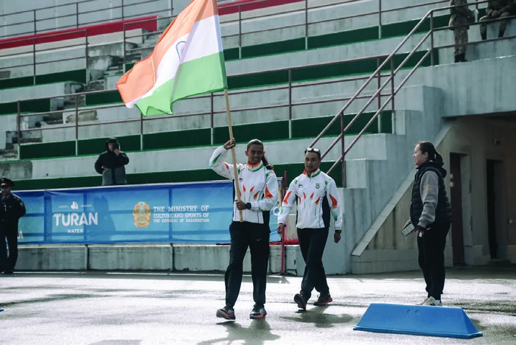

Two thousand kilometres from snow
How an athlete from a district with no winter reached a World Cup start list, and what the decade in between says about starting from wherever you actually are.
Kodagu to Ruka, 2013–2025

She has spent ten years explaining a sport nobody around her had heard of, to selectors, to sponsors and to customs officers. The talks come out of that.
Athlete · Speaker · Storyteller
The athlete is on the FIS record. The storyteller is the reason there were seasons to race at all. Almost every trip had to be paid for by somebody she talked into it first.
How an athlete from a district with no winter reached a World Cup start list, and what the decade in between says about starting from wherever you actually are.
Kodagu to Ruka, 2013–2025
She led India into an Asian Winter Games as flagbearer. On being the first, being the only one, and what changes for the next woman on the team sheet.
Harbin, February 2025
Before the racing there were glaciers, rope work and instructing jobs in Kashmir. What an unglamorous apprenticeship builds that talent alone does not.
HMI Darjeeling to Gulmarg, 2014–2019
A 10 km race at a World Cup, planned to the heartbeat. The invisible work behind one visible hour, told honestly enough to be useful to any team.
Ruka World Cup, 2025
Corporates · Schools · Universities · Conferences · Leadership programmes · Women's events · Sports organisations · Panels and fireside conversations.
Her race season runs from late November to March. Dates inside it are limited.
Invite Bhavani to speak